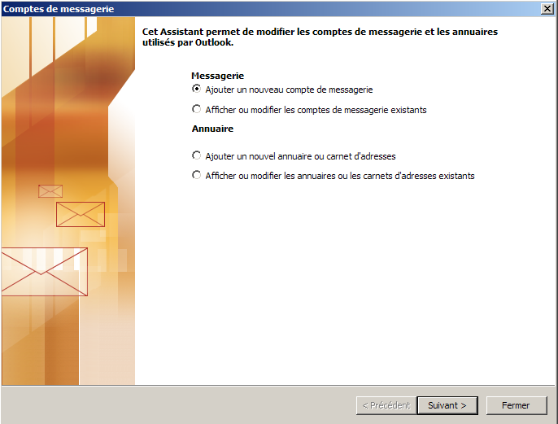
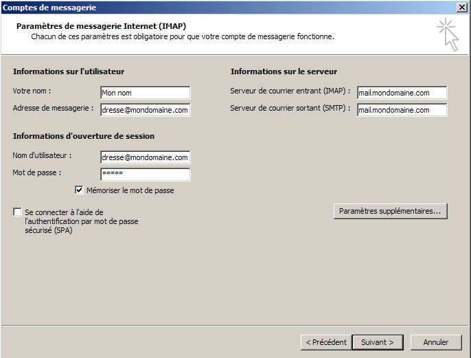
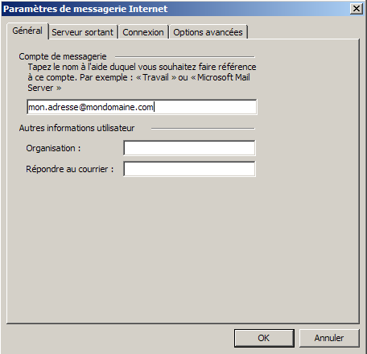
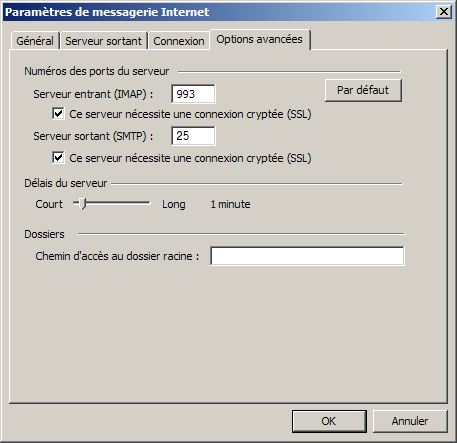

Configuration du client email Outlook.Information de base de notre compte d'exemple :
Adresse email : "mon.adresse@mondomaine.com" Configuration d'Outlook : Executez Outlook. Une nouvelle fenêtre apparaît :  Sélectionnez "Ajouter un nouveau compte de messagerie", puis cliquez sur le bouton "Suivant >" situé en bas à droite. Une nouvelle fenêtre apparaît :
Sélectionnez "IMAP", puis cliquez sur le bouton "Suivant >" situé en bas à droite. Une nouvelle fenêtre apparaît :  Lorsque l'on compose un email, l'adresse d'envoi se fait sous la forme : "Nom <adresse@email>". Ici la configuration de la partie "Votre nom :" correspond à la valeur "Nom" pour l'adresse d'expéditeur "Nom <adresse@email>". Pour le champ "Adresse de messagerie :" on mettra "mon.adresse@mondomaine.com". Pour le champ "Serveur de courrier entrant (IMAP) :" on mettra "mail.bearstech.com". Pour le champ "Serveur de courrier sortant (SMTP) :" on mettra "mail.bearstech.com". Lorsque l'on se connecte sur le serveur de réception pour relever nos emails, ou quand on se connecte sur le serveur d'envoi pour envoyer un email, le serveur en question fait une demande d'authentification. Elle est basée sur le nom de l'adresse email ainsi qu'un mot de passe. Pour définir l'authentification, il faut remplir les champs "Nom d'utilisateur" avec pour valeur l'adresse email, soit dans notre cas "mon.adresse@mondomaine.com", puis définir le mot de passe pour le champ "Mot de passe :" avec la valeur "a1b2c" qui sera masquée lors de la saisie. Pour passer à l'étape suivante il suffit de cliquer sur le bouton "Paramètres supplémentaires...". Une nouvelle fenêtre apparaît :  Afin de pouvoir se repérer facilement dans l'arborescence, nous allons nommer le répertoire racine du compte avec le nom de l'adresse email. Pour passer à l'étape suivante, cliquez sur l'onglet "Serveur sortant". Une nouvelle fenêtre apparaît :
Afin de s'authentifier sur le serveur d'envoi, cochez la case "Mon server sortant (SMTP) requiert une autentification" et sélectionnez "Utiliser les mêmes paramètres que mon serveur de courrier entrant". Pour passer à l'étape suivante, cliquez sur l'onglet "Options avancées". Une nouvelle fenêtre apparaît :  Pour pouvoir se connecter en mode sécurisé, cochez les deux cases "Ce serveur nécessite une connexion sécurisée (SSL)". Outlook est finalement configuré pour l'adresse email "Mon nom <mon.adresse@mondomaine.com>" et ce en connexion sécurisée. Cliquez sur le bouton "OK" sité en bas de la fenêtre de dialogue. Une nouvelle fenêtre apparaît :
Pour terminer, cliquez sur le bouton "Oui". |